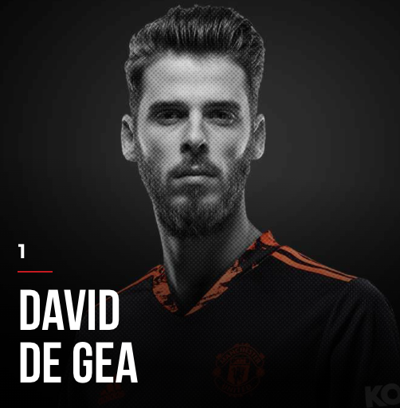
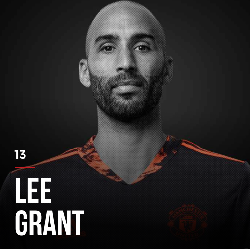
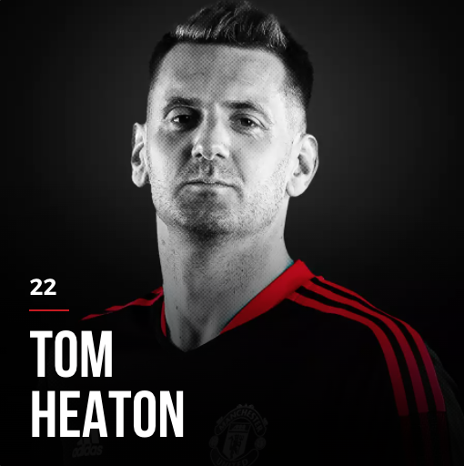

TOTAL TRANSFER MARKET VALUE: GBP 18 MILLION
  
Brought to the club by the former greatest-of-all-time club manager Sir Alex Ferguson, David De Gea has joined the legend temple at Manchester United with 10 years of contribution and the consistent form.
He has received many awards such as "Manchester United's Player of the Year", "Premier League's Golden Gloves", etc.
Dean Henderson is trained to become the next Manchester United's goalkeeper legend.
And...Welcome back, Tom Heaton! A Red Devil with all the love for the club, and comes back at the age of 35 to finish his dream to play for this logo!